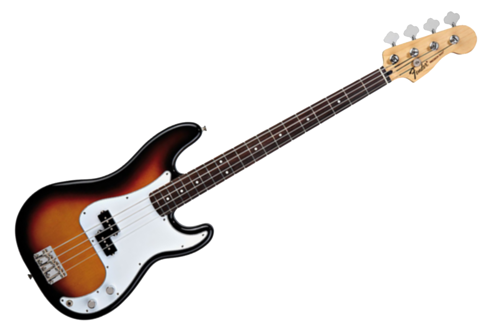

The bass guitar, also known as the electric bass (or simply bass), is the lowest-pitched member of the guitar family. It is similar in appearance and construction to an electric guitar but with a longer neck and scale length. The electric bass guitar most commonly has four strings, though five-, six-, seven-, eight- and twelve-stringed models are also built. The electric bass guitar was invented in the mid-1950s to replace the double bass in popular music due to its lighter weight, smaller size and easier portability, most models' inclusion of frets for easier intonation, and electromagnetic pickups for amplification.
The electric bass guitar is usually tuned the same as the double bass, corresponding to pitches one octave lower than the four lowest-pitched strings of a guitar, typically E, A, D, and G (5-string models typically add a low B, and 6-string models typically add a high C). It is played with the fingers, thumb or with a pick.